ME-NeuralFMU from the Modelica Conference 2021
Tutorial by Johannes Stoljar, Tobias Thummerer
Last edit: 29.03.2023
License
# Copyright (c) 2021 Tobias Thummerer, Lars Mikelsons, Johannes Stoljar
# Licensed under the MIT license.
# See LICENSE (https://github.com/thummeto/FMIFlux.jl/blob/main/LICENSE) file in the project root for details.Motivation
The Julia Package FMIFlux.jl is motivated by the application of hybrid modeling. This package enables the user to integrate his simulation model between neural networks (NeuralFMU). For this, the simulation model must be exported as FMU (functional mock-up unit), which corresponds to a widely used standard. The big advantage of hybrid modeling with artificial neural networks is, that the effects that are difficult to model (because they might be unknown) can be easily learned by the neural networks. For this purpose, the NeuralFMU is trained with measurement data containing the not modeled physical effect. The final product is a simulation model including the originally not modeled effects. Another big advantage of the NeuralFMU is that it works with little data, because the FMU already contains the characteristic functionality of the simulation and only the missing effects are added.
NeuralFMUs do not need to be as easy as in this example. Basically a NeuralFMU can combine different ANN topologies that manipulate any FMU-input (system state, system inputs, time) and any FMU-output (system state derivative, system outputs, other system variables). However, for this example a NeuralFMU topology as shown in the following picture is used.

NeuralFMU (ME) from [1].
Introduction to the example
In this example, simplified modeling of a one-dimensional spring pendulum (without friction) is compared to a model of the same system that includes a nonlinear friction model. The FMU with the simplified model will be named simpleFMU in the following and the model with the friction will be named realFMU. At the beginning, the actual state of both simulations is shown, whereby clear deviations can be seen in the graphs. In addition, the initial states are changed for both models and these graphs are also contrasted, and the differences can again be clearly seen. The realFMU serves as a reference graph. The simpleFMU is then integrated into a NeuralFMU architecture and a training of the entire network is performed. After the training the final state is compared again to the realFMU. It can be clearly seen that by using the NeuralFMU, learning of the friction process has taken place.
Target group
The example is primarily intended for users who work in the field of first principle and/or hybrid modeling and are further interested in hybrid model building. The example wants to show how simple it is to combine FMUs with machine learning and to illustrate the advantages of this approach.
Other formats
Besides, this Jupyter Notebook there is also a Julia file with the same name, which contains only the code cells. For the documentation there is a Markdown file corresponding to the notebook.
Getting started
Installation prerequisites
| Description | Command | |
|---|---|---|
| 1. | Enter Package Manager via | ] |
| 2. | Install FMI via | add FMI |
| 3. | Install FMIFlux via | add FMIFlux |
| 4. | Install FMIZoo via | add FMIZoo |
| 5. | Install DifferentialEquations via | add DifferentialEquations |
| 6. | Install Plots via | add Plots |
| 7. | Install Random via | add Random |
Code section
To run the example, the previously installed packages must be included.
# imports
using FMI
using FMIFlux
using FMIFlux.Flux
using FMIZoo
using DifferentialEquations: Tsit5
import Plots
# set seed
import Random
Random.seed!(1234);[33m[1m┌ [22m[39m[33m[1mWarning: [22m[39mError requiring `Enzyme` from `LinearSolve`
[33m[1m│ [22m[39m exception =
[33m[1m│ [22m[39m LoadError: ArgumentError: Package LinearSolve does not have Enzyme in its dependencies:
[33m[1m│ [22m[39m - You may have a partially installed environment. Try `Pkg.instantiate()`
[33m[1m│ [22m[39m to ensure all packages in the environment are installed.
[33m[1m│ [22m[39m - Or, if you have LinearSolve checked out for development and have
[33m[1m│ [22m[39m added Enzyme as a dependency but haven't updated your primary
[33m[1m│ [22m[39m environment's manifest file, try `Pkg.resolve()`.
[33m[1m│ [22m[39m - Otherwise you may need to report an issue with LinearSolve
[33m[1m│ [22m[39m Stacktrace:
[33m[1m│ [22m[39m [1] [0m[1mmacro expansion[22m
[33m[1m│ [22m[39m [90m @ [39m[90m.\[39m[90m[4mloading.jl:1167[24m[39m[90m [inlined][39m
[33m[1m│ [22m[39m [2] [0m[1mmacro expansion[22m
[33m[1m│ [22m[39m [90m @ [39m[90m.\[39m[90m[4mlock.jl:223[24m[39m[90m [inlined][39m
[33m[1m│ [22m[39m [3] [0m[1mrequire[22m[0m[1m([22m[90minto[39m::[0mModule, [90mmod[39m::[0mSymbol[0m[1m)[22m
[33m[1m│ [22m[39m [90m @ [39m[90mBase[39m [90m.\[39m[90m[4mloading.jl:1144[24m[39m
[33m[1m│ [22m[39m [4] [0m[1minclude[22m[0m[1m([22m[90mmod[39m::[0mModule, [90m_path[39m::[0mString[0m[1m)[22m
[33m[1m│ [22m[39m [90m @ [39m[90mBase[39m [90m.\[39m[90m[4mBase.jl:419[24m[39m
[33m[1m│ [22m[39m [5] [0m[1minclude[22m[0m[1m([22m[90mx[39m::[0mString[0m[1m)[22m
[33m[1m│ [22m[39m [90m @ [39m[35mLinearSolve[39m [90mC:\Users\runneradmin\.julia\packages\LinearSolve\qCLK7\src\[39m[90m[4mLinearSolve.jl:1[24m[39m
[33m[1m│ [22m[39m [6] [0m[1mmacro expansion[22m
[33m[1m│ [22m[39m [90m @ [39m[90mC:\Users\runneradmin\.julia\packages\Requires\Z8rfN\src\[39m[90m[4mRequires.jl:40[24m[39m[90m [inlined][39m
[33m[1m│ [22m[39m [7] top-level scope
[33m[1m│ [22m[39m [90m @ [39m[90mC:\Users\runneradmin\.julia\packages\LinearSolve\qCLK7\src\[39m[90m[4minit.jl:16[24m[39m
[33m[1m│ [22m[39m [8] [0m[1meval[22m
[33m[1m│ [22m[39m [90m @ [39m[90m.\[39m[90m[4mboot.jl:368[24m[39m[90m [inlined][39m
[33m[1m│ [22m[39m [9] [0m[1meval[22m
[33m[1m│ [22m[39m [90m @ [39m[90mC:\Users\runneradmin\.julia\packages\LinearSolve\qCLK7\src\[39m[90m[4mLinearSolve.jl:1[24m[39m[90m [inlined][39m
[33m[1m│ [22m[39m [10] [0m[1m(::LinearSolve.var"#88#97")[22m[0m[1m([22m[0m[1m)[22m
[33m[1m│ [22m[39m [90m @ [39m[35mLinearSolve[39m [90mC:\Users\runneradmin\.julia\packages\Requires\Z8rfN\src\[39m[90m[4mrequire.jl:101[24m[39m
[33m[1m│ [22m[39m [11] [0m[1mmacro expansion[22m
[33m[1m│ [22m[39m [90m @ [39m[90m[4mtiming.jl:382[24m[39m[90m [inlined][39m
[33m[1m│ [22m[39m [12] [0m[1merr[22m[0m[1m([22m[90mf[39m::[0mAny, [90mlistener[39m::[0mModule, [90mmodname[39m::[0mString, [90mfile[39m::[0mString, [90mline[39m::[0mAny[0m[1m)[22m
[33m[1m│ [22m[39m [90m @ [39m[36mRequires[39m [90mC:\Users\runneradmin\.julia\packages\Requires\Z8rfN\src\[39m[90m[4mrequire.jl:47[24m[39m
[33m[1m│ [22m[39m [13] [0m[1m(::LinearSolve.var"#87#96")[22m[0m[1m([22m[0m[1m)[22m
[33m[1m│ [22m[39m [90m @ [39m[35mLinearSolve[39m [90mC:\Users\runneradmin\.julia\packages\Requires\Z8rfN\src\[39m[90m[4mrequire.jl:100[24m[39m
[33m[1m│ [22m[39m [14] [0m[1mwithpath[22m[0m[1m([22m[90mf[39m::[0mAny, [90mpath[39m::[0mString[0m[1m)[22m
[33m[1m│ [22m[39m [90m @ [39m[36mRequires[39m [90mC:\Users\runneradmin\.julia\packages\Requires\Z8rfN\src\[39m[90m[4mrequire.jl:37[24m[39m
[33m[1m│ [22m[39m [15] [0m[1m(::LinearSolve.var"#86#95")[22m[0m[1m([22m[0m[1m)[22m
[33m[1m│ [22m[39m [90m @ [39m[35mLinearSolve[39m [90mC:\Users\runneradmin\.julia\packages\Requires\Z8rfN\src\[39m[90m[4mrequire.jl:99[24m[39m
[33m[1m│ [22m[39m [16] [0m[1m#invokelatest#2[22m
[33m[1m│ [22m[39m [90m @ [39m[90m.\[39m[90m[4messentials.jl:729[24m[39m[90m [inlined][39m
[33m[1m│ [22m[39m [17] [0m[1minvokelatest[22m
[33m[1m│ [22m[39m [90m @ [39m[90m.\[39m[90m[4messentials.jl:726[24m[39m[90m [inlined][39m
[33m[1m│ [22m[39m [18] [0m[1mforeach[22m[0m[1m([22m[90mf[39m::[0mtypeof(Base.invokelatest), [90mitr[39m::[0mVector[90m{Function}[39m[0m[1m)[22m
[33m[1m│ [22m[39m [90m @ [39m[90mBase[39m [90m.\[39m[90m[4mabstractarray.jl:2774[24m[39m
[33m[1m│ [22m[39m [19] [0m[1mloadpkg[22m[0m[1m([22m[90mpkg[39m::[0mBase.PkgId[0m[1m)[22m
[33m[1m│ [22m[39m [90m @ [39m[36mRequires[39m [90mC:\Users\runneradmin\.julia\packages\Requires\Z8rfN\src\[39m[90m[4mrequire.jl:27[24m[39m
[33m[1m│ [22m[39m [20] [0m[1m#invokelatest#2[22m
[33m[1m│ [22m[39m [90m @ [39m[90m.\[39m[90m[4messentials.jl:729[24m[39m[90m [inlined][39m
[33m[1m│ [22m[39m [21] [0m[1minvokelatest[22m
[33m[1m│ [22m[39m [90m @ [39m[90m.\[39m[90m[4messentials.jl:726[24m[39m[90m [inlined][39m
[33m[1m│ [22m[39m [22] [0m[1mrun_package_callbacks[22m[0m[1m([22m[90mmodkey[39m::[0mBase.PkgId[0m[1m)[22m
[33m[1m│ [22m[39m [90m @ [39m[90mBase[39m [90m.\[39m[90m[4mloading.jl:869[24m[39m
[33m[1m│ [22m[39m [23] [0m[1m_tryrequire_from_serialized[22m[0m[1m([22m[90mmodkey[39m::[0mBase.PkgId, [90mpath[39m::[0mString, [90msourcepath[39m::[0mString, [90mdepmods[39m::[0mVector[90m{Any}[39m[0m[1m)[22m
[33m[1m│ [22m[39m [90m @ [39m[90mBase[39m [90m.\[39m[90m[4mloading.jl:944[24m[39m
[33m[1m│ [22m[39m [24] [0m[1m_require_search_from_serialized[22m[0m[1m([22m[90mpkg[39m::[0mBase.PkgId, [90msourcepath[39m::[0mString, [90mbuild_id[39m::[0mUInt64[0m[1m)[22m
[33m[1m│ [22m[39m [90m @ [39m[90mBase[39m [90m.\[39m[90m[4mloading.jl:1028[24m[39m
[33m[1m│ [22m[39m [25] [0m[1m_require[22m[0m[1m([22m[90mpkg[39m::[0mBase.PkgId[0m[1m)[22m
[33m[1m│ [22m[39m [90m @ [39m[90mBase[39m [90m.\[39m[90m[4mloading.jl:1315[24m[39m
[33m[1m│ [22m[39m [26] [0m[1m_require_prelocked[22m[0m[1m([22m[90muuidkey[39m::[0mBase.PkgId[0m[1m)[22m
[33m[1m│ [22m[39m [90m @ [39m[90mBase[39m [90m.\[39m[90m[4mloading.jl:1200[24m[39m
[33m[1m│ [22m[39m [27] [0m[1mmacro expansion[22m
[33m[1m│ [22m[39m [90m @ [39m[90m.\[39m[90m[4mloading.jl:1180[24m[39m[90m [inlined][39m
[33m[1m│ [22m[39m [28] [0m[1mmacro expansion[22m
[33m[1m│ [22m[39m [90m @ [39m[90m.\[39m[90m[4mlock.jl:223[24m[39m[90m [inlined][39m
[33m[1m│ [22m[39m [29] [0m[1mrequire[22m[0m[1m([22m[90minto[39m::[0mModule, [90mmod[39m::[0mSymbol[0m[1m)[22m
[33m[1m│ [22m[39m [90m @ [39m[90mBase[39m [90m.\[39m[90m[4mloading.jl:1144[24m[39m
[33m[1m│ [22m[39m [30] [0m[1meval[22m
[33m[1m│ [22m[39m [90m @ [39m[90m.\[39m[90m[4mboot.jl:368[24m[39m[90m [inlined][39m
[33m[1m│ [22m[39m [31] [0m[1minclude_string[22m[0m[1m([22m[90mmapexpr[39m::[0mtypeof(REPL.softscope), [90mmod[39m::[0mModule, [90mcode[39m::[0mString, [90mfilename[39m::[0mString[0m[1m)[22m
[33m[1m│ [22m[39m [90m @ [39m[90mBase[39m [90m.\[39m[90m[4mloading.jl:1428[24m[39m
[33m[1m│ [22m[39m [32] [0m[1msoftscope_include_string[22m[0m[1m([22m[90mm[39m::[0mModule, [90mcode[39m::[0mString, [90mfilename[39m::[0mString[0m[1m)[22m
[33m[1m│ [22m[39m [90m @ [39m[32mSoftGlobalScope[39m [90mC:\Users\runneradmin\.julia\packages\SoftGlobalScope\u4UzH\src\[39m[90m[4mSoftGlobalScope.jl:65[24m[39m
[33m[1m│ [22m[39m [33] [0m[1mexecute_request[22m[0m[1m([22m[90msocket[39m::[0mZMQ.Socket, [90mmsg[39m::[0mIJulia.Msg[0m[1m)[22m
[33m[1m│ [22m[39m [90m @ [39m[33mIJulia[39m [90mC:\Users\runneradmin\.julia\packages\IJulia\Vo51o\src\[39m[90m[4mexecute_request.jl:67[24m[39m
[33m[1m│ [22m[39m [34] [0m[1m#invokelatest#2[22m
[33m[1m│ [22m[39m [90m @ [39m[90m.\[39m[90m[4messentials.jl:729[24m[39m[90m [inlined][39m
[33m[1m│ [22m[39m [35] [0m[1minvokelatest[22m
[33m[1m│ [22m[39m [90m @ [39m[90m.\[39m[90m[4messentials.jl:726[24m[39m[90m [inlined][39m
[33m[1m│ [22m[39m [36] [0m[1meventloop[22m[0m[1m([22m[90msocket[39m::[0mZMQ.Socket[0m[1m)[22m
[33m[1m│ [22m[39m [90m @ [39m[33mIJulia[39m [90mC:\Users\runneradmin\.julia\packages\IJulia\Vo51o\src\[39m[90m[4meventloop.jl:8[24m[39m
[33m[1m│ [22m[39m [37] [0m[1m(::IJulia.var"#15#18")[22m[0m[1m([22m[0m[1m)[22m
[33m[1m│ [22m[39m [90m @ [39m[33mIJulia[39m [90m.\[39m[90m[4mtask.jl:484[24m[39m
[33m[1m│ [22m[39m in expression starting at C:\Users\runneradmin\.julia\packages\LinearSolve\qCLK7\ext\LinearSolveEnzymeExt.jl:1
[33m[1m└ [22m[39m[90m@ Requires C:\Users\runneradmin\.julia\packages\Requires\Z8rfN\src\require.jl:51[39mAfter importing the packages, the path to the Functional Mock-up Units (FMUs) is set. The exported FMU is a model meeting the Functional Mock-up Interface (FMI) Standard. The FMI is a free standard (fmi-standard.org) that defines a container and an interface to exchange dynamic models using a combination of XML files, binaries and C code zipped into a single file.
The object-orientated structure of the SpringPendulum1D (simpleFMU) can be seen in the following graphic and corresponds to a simple modeling.

In contrast, the model SpringFrictionPendulum1D (realFMU) is somewhat more accurate, because it includes a friction component.

Next, the start time and end time of the simulation are set. Finally, a step size is specified to store the results of the simulation at these time steps.
tStart = 0.0
tStep = 0.01
tStop = 4.0
tSave = collect(tStart:tStep:tStop)401-element Vector{Float64}:
0.0
0.01
0.02
0.03
0.04
0.05
0.06
0.07
0.08
0.09
0.1
0.11
0.12
⋮
3.89
3.9
3.91
3.92
3.93
3.94
3.95
3.96
3.97
3.98
3.99
4.0RealFMU
In the next lines of code the FMU of the realFMU model from FMIZoo.jl is loaded and the information about the FMU is shown.
realFMU = fmiLoad("SpringFrictionPendulum1D", "Dymola", "2022x")
fmiInfo(realFMU)#################### Begin information for FMU ####################
Model name: SpringFrictionPendulum1D
FMI-Version: 2.0
GUID: {2e178ad3-5e9b-48ec-a7b2-baa5669efc0c}
Generation tool: Dymola Version 2022x (64-bit), 2021-10-08
Generation time: 2022-05-19T06:54:12Z
Var. naming conv.: structured
Event indicators: 24
Inputs: 0
Outputs: 0
States: 2
33554432 ["mass.s"]
33554433 ["mass.v", "mass.v_relfric"]
Supports Co-Simulation: true
Model identifier: SpringFrictionPendulum1D
Get/Set State: true
Serialize State: true
Dir. Derivatives: true
Var. com. steps: true
Input interpol.: true
Max order out. der.: 1
Supports Model-Exchange: true
Model identifier: SpringFrictionPendulum1D
Get/Set State: true
Serialize State: true
Dir. Derivatives: true
##################### End information for FMU #####################In the following two subsections, the realFMU is simulated twice with different initial states to show what effect the choice of initial states has.
Default initial states
In the next steps the parameters are defined. The first parameter is the initial position of the mass, which is initialized with $0.5m$, the second parameter is the initial velocity, which is initialized with $0\frac{m}{s}$. In the function fmiSimulate() the realFMU is simulated, still specifying the start and end time, the parameters and which variables are recorded. After the simulation is finished the result of the realFMU can be plotted. This plot also serves as a reference for the other model (simpleFMU). The extracted data will still be needed later on.
initStates = ["s0", "v0"]
x₀ = [0.5, 0.0]
params = Dict(zip(initStates, x₀))
vrs = ["mass.s", "mass.v", "mass.a", "mass.f"]
realSimData = fmiSimulate(realFMU, (tStart, tStop); parameters=params, recordValues=vrs, saveat=tSave)
posReal = fmi2GetSolutionValue(realSimData, "mass.s")
velReal = fmi2GetSolutionValue(realSimData, "mass.v")
fmiPlot(realSimData)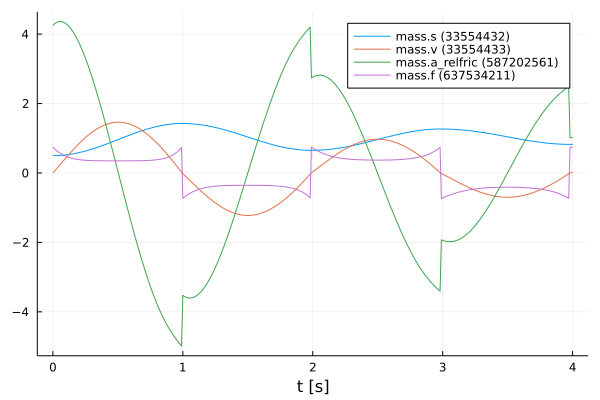
Define functions
The structure of the previous code section is used more often in the further sections, so for clarity the previously explained code section for setting the paramters and simulating are combined into one function simulate().
function simulate(FMU, initStates, x₀, variables, tStart, tStop, tSave)
params = Dict(zip(initStates, x₀))
return fmiSimulate(FMU, (tStart, tStop); parameters=params, recordValues=variables, saveat=tSave)
endsimulate (generic function with 1 method)Also, a function to extract the position and velocity from the simulation data is created.
function extractPosVel(simData)
if simData.states === nothing
posData = fmi2GetSolutionValue(simData, "mass.s")
velData = fmi2GetSolutionValue(simData, "mass.v")
else
posData = fmi2GetSolutionState(simData, 1; isIndex=true)
velData = fmi2GetSolutionState(simData, 2; isIndex=true)
end
return posData, velData
endextractPosVel (generic function with 1 method)Modified initial states
In contrast to the previous section, other initial states are selected. The position of the mass is initialized with $1.0m$ and the velocity is initialized with $-1.5\frac{m}{s}$. With the modified initial states the realFMU is simulated and a graph is generated.
xMod₀ = [1.0, -1.5]
realSimDataMod = simulate(realFMU, initStates, xMod₀, vrs, tStart, tStop, tSave)
fmiPlot(realSimDataMod)After the plots are created, the FMU is unloaded.
fmiUnload(realFMU)SimpleFMU
The following lines load the simpleFMU from FMIZoo.jl.
simpleFMU = fmiLoad("SpringPendulum1D", "Dymola", "2022x")
fmiInfo(simpleFMU)#################### Begin information for FMU ####################
Model name: SpringPendulum1D
FMI-Version: 2.0
GUID: {fc15d8c4-758b-48e6-b00e-5bf47b8b14e5}
Generation tool: Dymola Version 2022x (64-bit), 2021-10-08
Generation time: 2022-05-19T06:54:23Z
Var. naming conv.: structured
Event indicators: 0
Inputs: 0
Outputs: 0
States: 2
33554432 ["mass.s"]
33554433 ["mass.v"]
Supports Co-Simulation: true
Model identifier: SpringPendulum1D
Get/Set State: true
Serialize State: true
Dir. Derivatives: true
Var. com. steps: true
Input interpol.: true
Max order out. der.: 1
Supports Model-Exchange: true
Model identifier: SpringPendulum1D
Get/Set State: true
Serialize State: true
Dir. Derivatives: true
##################### End information for FMU #####################The differences between both systems can be clearly seen from the plots in the subchapters. In the plot for the realFMU it can be seen that the oscillation continues to decrease due to the effect of the friction. If you simulate long enough, the oscillation would come to a standstill in a certain time. The oscillation in the simpleFMU behaves differently, since the friction was not taken into account here. The oscillation in this model would continue to infinity with the same oscillation amplitude. From this observation the desire of an improvement of this model arises.
In the following two subsections, the simpleFMU is simulated twice with different initial states to show what effect the choice of initial states has.
Default initial states
Similar to the simulation of the realFMU, the simpleFMU is also simulated with the default values for the position and velocity of the mass and then plotted. There is one difference, however, as another state representing a fixed displacement is set. In addition, the last variable is also removed from the variables to be plotted.
initStates = ["mass_s0", "mass_v0", "fixed.s0"]
displacement = 0.1
xSimple₀ = vcat(x₀, displacement)
vrs = vrs[1:end-1]
simpleSimData = simulate(simpleFMU, initStates, xSimple₀, vrs, tStart, tStop, tSave)
fmiPlot(simpleSimData)
Modified initial states
The same values for the initial states are used for this simulation as for the simulation from the realFMU with the modified initial states.
xSimpleMod₀ = vcat(xMod₀, displacement)
simpleSimDataMod = simulate(simpleFMU, initStates, xSimpleMod₀, vrs, tStart, tStop, tSave)
fmiPlot(simpleSimDataMod)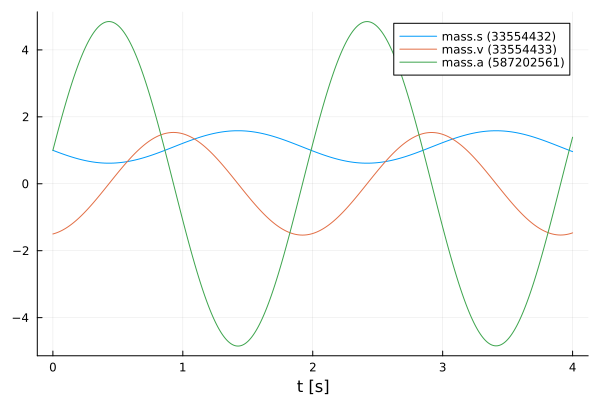
NeuralFMU
Loss function
In order to train our model, a loss function must be implemented. The solver of the NeuralFMU can calculate the gradient of the loss function. The gradient descent is needed to adjust the weights in the neural network so that the sum of the error is reduced and the model becomes more accurate.
The error function in this implementation consists of the mean of the mean squared errors. The first part of the addition is the deviation of the position and the second part is the deviation of the velocity. The mean squared error (mse) for the position consists from the real position of the realFMU simulation (posReal) and the position data of the network (posNet). The mean squared error for the velocity consists of the real velocity of the realFMU simulation (velReal) and the velocity data of the network (velNet). $ e{loss} = \frac{1}{2} \Bigl[ \frac{1}{n} \sum\limits{i=0}^n (posReal[i] - posNet[i])^2 + \frac{1}{n} \sum\limits_{i=0}^n (velReal[i] - velNet[i])^2 \Bigr]$
# loss function for training
function lossSum(p)
global x₀
solution = neuralFMU(x₀; p=p)
posNet, velNet = extractPosVel(solution)
(FMIFlux.Losses.mse(posReal, posNet) + FMIFlux.Losses.mse(velReal, velNet)) / 2.0
endlossSum (generic function with 1 method)Callback
To output the loss in certain time intervals, a callback is implemented as a function in the following. Here a counter is incremented, every fiftieth pass the loss function is called and the average error is printed out. Also, the parameters for the velocity in the first layer are kept to a fixed value.
# callback function for training
global counter = 0
function callb(p)
global counter
counter += 1
# freeze first layer parameters (2,4,6) for velocity -> (static) direct feed trough for velocity
# parameters for position (1,3,5) are learned
p[1][2] = 0.0
p[1][4] = 1.0
p[1][6] = 0.0
if counter % 50 == 1
avgLoss = lossSum(p[1])
@info " Loss [$counter]: $(round(avgLoss, digits=5))
Avg displacement in data: $(round(sqrt(avgLoss), digits=5))
Weight/Scale: $(paramsNet[1][1]) Bias/Offset: $(paramsNet[1][5])"
end
endcallb (generic function with 1 method)Functions for plotting
In this section some important functions for plotting are defined. The function generate_figure() creates a new figure object and sets some attributes.
function generate_figure(title, xLabel, yLabel, xlim=:auto)
Plots.plot(
title=title, xlabel=xLabel, ylabel=yLabel, linewidth=2,
xtickfontsize=12, ytickfontsize=12, xguidefontsize=12, yguidefontsize=12,
legendfontsize=12, legend=:topright, xlim=xlim)
endgenerate_figure (generic function with 2 methods)In the following function, the data of the realFMU, simpleFMU and neuralFMU are summarized and displayed in a graph.
function plot_results(title, xLabel, yLabel, interval, realData, simpleData, neuralData)
linestyles = [:dot, :solid]
fig = generate_figure(title, xLabel, yLabel)
Plots.plot!(fig, interval, simpleData, label="SimpleFMU", linewidth=2)
Plots.plot!(fig, interval, realData, label="Reference", linewidth=2)
for i in 1:length(neuralData)
Plots.plot!(fig, neuralData[i][1], neuralData[i][2], label="NeuralFMU ($(i*2500))",
linewidth=2, linestyle=linestyles[i], linecolor=:green)
end
Plots.display(fig)
endplot_results (generic function with 1 method)This is the superordinate function, which at the beginning extracts the position and velocity from the simulation data (realSimData, realSimDataMod, simpleSimData,..., solutionAfterMod). Four graphs are then generated, each comparing the corresponding data from the realFMU, simpleFMU, and neuralFMU. The comparison is made with the simulation data from the simulation with the default and modified initial states. According to the data, the designation of the title and the naming of the axes is adapted.
function plot_all_results(realSimData, realSimDataMod, simpleSimData,
simpleSimDataMod, solutionAfter, solutionAfterMod)
# collect all data
posReal, velReal = extractPosVel(realSimData)
posRealMod, velRealMod = extractPosVel(realSimDataMod)
posSimple, velSimple = extractPosVel(simpleSimData)
posSimpleMod, velSimpleMod = extractPosVel(simpleSimDataMod)
run = length(solutionAfter)
posNeural, velNeural = [], []
posNeuralMod, velNeuralMod = [], []
for i in 1:run
dataNeural = extractPosVel(solutionAfter[i])
time = fmi2GetSolutionTime(solutionAfter[i])
push!(posNeural, (time, dataNeural[1]))
push!(velNeural, (time, dataNeural[2]))
dataNeuralMod = extractPosVel(solutionAfterMod[i])
time = fmi2GetSolutionTime(solutionAfterMod[i])
push!(posNeuralMod, (time, dataNeuralMod[1]))
push!(velNeuralMod, (time, dataNeuralMod[2]))
end
# plot results s (default initial states)
xLabel="t [s]"
yLabel="mass position [m]"
title = "Default: Mass position after Run: $(run)"
plot_results(title, xLabel, yLabel, tSave, posReal, posSimple, posNeural)
# plot results s (modified initial states)
title = "Modified: Mass position after Run: $(run)"
plot_results(title, xLabel, yLabel, tSave, posRealMod, posSimpleMod, posNeuralMod)
# plot results v (default initial states)
yLabel="mass velocity [m/s]"
title = "Default: Mass velocity after Run: $(run)"
plot_results(title, xLabel, yLabel, tSave, velReal, velSimple, velNeural)
# plot results v (modified initial states)
title = "Modified: Mass velocity after Run: $(run)"
plot_results(title, xLabel, yLabel, tSave, velRealMod, velSimpleMod, velNeuralMod)
endplot_all_results (generic function with 1 method)The function plot_friction_model() compares the friction model of the realFMU, simpleFMU and neuralFMU. For this, the velocity and force from the simulation data of the realFMU is needed. The force data is calculated with the extracted last layer of the neuralFMU to the real velocity in line 9 by iterating over the vector velReal. In the next rows, the velocity and force data (if available) for each of the three FMUs are combined into a matrix. The first row of the matrix corresponds to the later x-axis and here the velocity is plotted. The second row corresponds to the y-axis and here the force is plotted. This matrix is sorted and plotted by the first entries (velocity) with the function sortperm(). The graph with at least three graphs is plotted in line 33. As output this function has the forces of the neuralFMU.
function plot_friction_model(realSimData, netBottom, forces)
linestyles = [:dot, :solid]
velReal = fmi2GetSolutionValue(realSimData, "mass.v")
forceReal = fmi2GetSolutionValue(realSimData, "mass.f")
push!(forces, zeros(length(velReal)))
for i in 1:length(velReal)
forces[end][i] = -netBottom([velReal[i], 0.0])[2]
end
run = length(forces)
fig = generate_figure("Friction model $(run)", "v [m/s]", "friction force [N]", (-1.25, 1.25))
fricSimple = hcat(velReal, zeros(length(velReal)))
fricSimple[sortperm(fricSimple[:, 1]), :]
Plots.plot!(fig, fricSimple[:,1], fricSimple[:,2], label="SimpleFMU", linewidth=2)
fricReal = hcat(velReal, forceReal)
fricReal[sortperm(fricReal[:, 1]), :]
Plots.plot!(fig, fricReal[:,1], fricReal[:,2], label="reference", linewidth=2)
for i in 1:run
fricNeural = hcat(velReal, forces[i])
fricNeural[sortperm(fricNeural[:, 1]), :]
Plots.plot!(fig, fricNeural[:,1], fricNeural[:,2], label="NeuralFMU ($(i*2500))",
linewidth=2, linestyle=linestyles[i], linecolor=:green)
@info "Friction model $i mse: $(FMIFlux.Losses.mse(fricNeural[:,2], fricReal[:,2]))"
end
flush(stderr)
Plots.display(fig)
return forces
endplot_friction_model (generic function with 1 method)The following function is used to display the different displacement modells of the realFMU, simpleFMU and neuralFMU. The displacement of the realFMU and simpleFMU is very trivial and is only a constant. The position data of the realFMU is needed to calculate the displacement. The displacement for the neuralFMU is calculated using the first extracted layer of the neural network, subtracting the real position and the displacement of the simpleFMU. Also in this function, the graphs of the three FMUs are compared in a plot.
function plot_displacement_model(realSimData, netTop, displacements, tSave, displacement)
linestyles = [:dot, :solid]
posReal = fmi2GetSolutionValue(realSimData, "mass.s")
push!(displacements, zeros(length(posReal)))
for i in 1:length(posReal)
displacements[end][i] = netTop([posReal[i], 0.0])[1] - posReal[i] - displacement
end
run = length(displacements)
fig = generate_figure("Displacement model $(run)", "t [s]", "displacement [m]")
Plots.plot!(fig, [tSave[1], tSave[end]], [displacement, displacement], label="simpleFMU", linewidth=2)
Plots.plot!(fig, [tSave[1], tSave[end]], [0.0, 0.0], label="reference", linewidth=2)
for i in 1:run
Plots.plot!(fig, tSave, displacements[i], label="NeuralFMU ($(i*2500))",
linewidth=2, linestyle=linestyles[i], linecolor=:green)
end
Plots.display(fig)
return displacements
endplot_displacement_model (generic function with 1 method)Structure of the NeuralFMU
In the following, the topology of the NeuralFMU is constructed. It consists of a dense layer that has exactly as many inputs and outputs as the model has states numStates (and therefore state derivatives). It also sets the initial weights and offsets for the first dense layer, as well as the activation function, which consists of the identity. An input layer follows, which then leads into the simpleFMU model. The ME-FMU computes the state derivatives for a given system state. Following the simpleFMU is a dense layer that has numStates states. The output of this layer consists of 8 output nodes and a identity activation function. The next layer has 8 input and output nodes with a tanh activation function. The last layer is again a dense layer with 8 input nodes and the number of states as outputs. Here, it is important that no tanh-activation function follows, because otherwise the pendulums state values would be limited to the interval $[-1;1]$.
# NeuralFMU setup
numStates = fmiGetNumberOfStates(simpleFMU)
# diagonal matrix
initW = zeros(numStates, numStates)
for i in 1:numStates
initW[i,i] = 1
end
net = Chain(Dense(numStates, numStates, identity),
x -> simpleFMU(x=x, dx_refs=:all),
Dense(numStates, 8, identity),
Dense(8, 8, tanh),
Dense(8, numStates))Chain(
Dense(2 => 2), [90m# 6 parameters[39m
var"#1#2"(),
Dense(2 => 8), [90m# 24 parameters[39m
Dense(8 => 8, tanh), [90m# 72 parameters[39m
Dense(8 => 2), [90m# 18 parameters[39m
) [90m # Total: 8 arrays, [39m120 parameters, 992 bytes.Definition of the NeuralFMU
The instantiation of the ME-NeuralFMU is done as a one-liner. The FMU (simpleFMU), the structure of the network net, start tStart and end time tStop, the numerical solver Tsit5() and the time steps tSave for saving are specified.
neuralFMU = ME_NeuralFMU(simpleFMU, net, (tStart, tStop), Tsit5(); saveat=tSave);Plot before training
Here the state trajectory of the simpleFMU is recorded. Doesn't really look like a pendulum yet, but the system is random initialized by default. In the plots later on, the effect of learning can be seen.
solutionBefore = neuralFMU(x₀)
fmiPlot(solutionBefore)
Training of the NeuralFMU
For the training of the NeuralFMU the parameters are extracted. All parameters of the first layer are set to the absolute value.
# train
paramsNet = FMIFlux.params(neuralFMU)
for i in 1:length(paramsNet[1])
if paramsNet[1][i] < 0.0
paramsNet[1][i] = -paramsNet[1][i]
end
endThe well-known Adam optimizer for minimizing the gradient descent is used as further passing parameters. Additionally, the previously defined loss and callback function as well as a one for the number of epochs are passed. Only one epoch is trained so that the NeuralFMU is precompiled.
optim = Adam()
FMIFlux.train!(lossSum, paramsNet, Iterators.repeated((), 1), optim; cb=()->callb(paramsNet)) [36m[1m┌ [22m[39m[36m[1mInfo: [22m[39m Loss [1]: 0.64142
[36m[1m│ [22m[39m Avg displacement in data: 0.80089
[36m[1m└ [22m[39m Weight/Scale: 0.5550727972914963 Bias/Offset: 0.0009999999900018055Some vectors for collecting data are initialized and the number of runs, epochs and iterations are set.
solutionAfter = []
solutionAfterMod = []
forces = []
displacements = []
numRuns = 2
numEpochs= 5
numIterations = 500;Training loop
The code section shown here represents the training loop. The loop is structured so that it has numRuns runs, where each run has numEpochs epochs, and the training is performed at each epoch with numIterations iterations. In lines 9 and 10, the data for the neuralFMU for the default and modified initial states are appended to the corresponding vectors. The plots for the opposition of position and velocity is done in line 13 by calling the function plot_all_results. In the following lines the last layers are extracted from the neuralFMU and formed into an independent network netBottom. The parameters for the netBottom network come from the original architecture and are shared. In line 20, the new network is used to represent the friction model in a graph. An analogous construction of the next part of the training loop, where here the first layer is taken from the neuralFMU and converted to its own network netTop. This network is used to record the displacement model. The different graphs are generated for each run and can thus be compared.
for run in 1:numRuns
@time for epoch in 1:numEpochs
@info "Run: $(run)/$(numRuns) Epoch: $(epoch)/$(numEpochs)"
FMIFlux.train!(lossSum, paramsNet, Iterators.repeated((), numIterations), optim; cb=()->callb(paramsNet))
end
flush(stderr)
flush(stdout)
push!(solutionAfter, neuralFMU(x₀))
push!(solutionAfterMod, neuralFMU(xMod₀))
# generate all plots for the position and velocity
plot_all_results(realSimData, realSimDataMod, simpleSimData, simpleSimDataMod, solutionAfter, solutionAfterMod)
# friction model extraction
layersBottom = neuralFMU.model.layers[3:5]
netBottom = Chain(layersBottom...)
transferFlatParams!(netBottom, paramsNet, 7)
forces = plot_friction_model(realSimData, netBottom, forces)
# displacement model extraction
layersTop = neuralFMU.model.layers[1:1]
netTop = Chain(layersTop...)
transferFlatParams!(netTop, paramsNet, 1)
displacements = plot_displacement_model(realSimData, netTop, displacements, tSave, displacement)
end[36m[1m[ [22m[39m[36m[1mInfo: [22m[39mRun: 1/2 Epoch: 1/5
[36m[1m┌ [22m[39m[36m[1mInfo: [22m[39m Loss [51]: 0.45484
[36m[1m│ [22m[39m Avg displacement in data: 0.67441
[36m[1m└ [22m[39m Weight/Scale: 0.6028857336624326 Bias/Offset: 0.04828746179431685
[36m[1m┌ [22m[39m[36m[1mInfo: [22m[39m Loss [101]: 0.39137
[36m[1m│ [22m[39m Avg displacement in data: 0.62559
[36m[1m└ [22m[39m Weight/Scale: 0.6409485347322638 Bias/Offset: 0.08735009057284757
[36m[1m┌ [22m[39m[36m[1mInfo: [22m[39m Loss [151]: 0.35728
[36m[1m│ [22m[39m Avg displacement in data: 0.59773
[36m[1m└ [22m[39m Weight/Scale: 0.6705087668476569 Bias/Offset: 0.11918254003712032
[36m[1m┌ [22m[39m[36m[1mInfo: [22m[39m Loss [201]: 0.33751
[36m[1m│ [22m[39m Avg displacement in data: 0.58095
[36m[1m└ [22m[39m Weight/Scale: 0.6940568319088312 Bias/Offset: 0.14523328103205085
[36m[1m┌ [22m[39m[36m[1mInfo: [22m[39m Loss [251]: 0.32533
[36m[1m│ [22m[39m Avg displacement in data: 0.57037
[36m[1m└ [22m[39m Weight/Scale: 0.7129500860308634 Bias/Offset: 0.1663656199164172
[36m[1m┌ [22m[39m[36m[1mInfo: [22m[39m Loss [301]: 0.31723
[36m[1m│ [22m[39m Avg displacement in data: 0.56323
[36m[1m└ [22m[39m Weight/Scale: 0.7280819021944014 Bias/Offset: 0.18316677007288804
[36m[1m┌ [22m[39m[36m[1mInfo: [22m[39m Loss [351]: 0.3109
[36m[1m│ [22m[39m Avg displacement in data: 0.55758
[36m[1m└ [22m[39m Weight/Scale: 0.7400740464599734 Bias/Offset: 0.19603428885145335
[36m[1m┌ [22m[39m[36m[1mInfo: [22m[39m Loss [401]: 0.30264
[36m[1m│ [22m[39m Avg displacement in data: 0.55013
[36m[1m└ [22m[39m Weight/Scale: 0.7494607797876239 Bias/Offset: 0.20518017797482924
[36m[1m┌ [22m[39m[36m[1mInfo: [22m[39m Loss [451]: 0.28731
[36m[1m│ [22m[39m Avg displacement in data: 0.53601
[36m[1m└ [22m[39m Weight/Scale: 0.7570720348458783 Bias/Offset: 0.21049009274369615
[36m[1m┌ [22m[39m[36m[1mInfo: [22m[39m Loss [501]: 0.23753
[36m[1m│ [22m[39m Avg displacement in data: 0.48737
[36m[1m└ [22m[39m Weight/Scale: 0.7632942091885936 Bias/Offset: 0.21040371558754664
[36m[1m[ [22m[39m[36m[1mInfo: [22m[39mRun: 1/2 Epoch: 2/5
[36m[1m┌ [22m[39m[36m[1mInfo: [22m[39m Loss [551]: 0.17401
[36m[1m│ [22m[39m Avg displacement in data: 0.41714
[36m[1m└ [22m[39m Weight/Scale: 0.7717226072550869 Bias/Offset: 0.21483531372655337
[36m[1m┌ [22m[39m[36m[1mInfo: [22m[39m Loss [601]: 0.03173
[36m[1m│ [22m[39m Avg displacement in data: 0.17812
[36m[1m└ [22m[39m Weight/Scale: 0.7892210396430668 Bias/Offset: 0.24172722475135366
[36m[1m┌ [22m[39m[36m[1mInfo: [22m[39m Loss [651]: 0.02428
[36m[1m│ [22m[39m Avg displacement in data: 0.15581
[36m[1m└ [22m[39m Weight/Scale: 0.7841274566027157 Bias/Offset: 0.23175471539355325
[36m[1m┌ [22m[39m[36m[1mInfo: [22m[39m Loss [701]: 0.02002
[36m[1m│ [22m[39m Avg displacement in data: 0.14151
[36m[1m└ [22m[39m Weight/Scale: 0.7808187885111949 Bias/Offset: 0.2262116052089325
[36m[1m┌ [22m[39m[36m[1mInfo: [22m[39m Loss [751]: 0.01804
[36m[1m│ [22m[39m Avg displacement in data: 0.13432
[36m[1m└ [22m[39m Weight/Scale: 0.7780946191349173 Bias/Offset: 0.22199320882733364
[36m[1m┌ [22m[39m[36m[1mInfo: [22m[39m Loss [801]: 0.01692
[36m[1m│ [22m[39m Avg displacement in data: 0.1301
[36m[1m└ [22m[39m Weight/Scale: 0.7758646488985046 Bias/Offset: 0.21886404004132454
[36m[1m┌ [22m[39m[36m[1mInfo: [22m[39m Loss [851]: 0.01661
[36m[1m│ [22m[39m Avg displacement in data: 0.12889
[36m[1m└ [22m[39m Weight/Scale: 0.7738031076199591 Bias/Offset: 0.21645569980722426
[36m[1m┌ [22m[39m[36m[1mInfo: [22m[39m Loss [901]: 0.01582
[36m[1m│ [22m[39m Avg displacement in data: 0.12578
[36m[1m└ [22m[39m Weight/Scale: 0.7718233402225411 Bias/Offset: 0.21446341245685174
[36m[1m┌ [22m[39m[36m[1mInfo: [22m[39m Loss [951]: 0.01517
[36m[1m│ [22m[39m Avg displacement in data: 0.12319
[36m[1m└ [22m[39m Weight/Scale: 0.7704339297020146 Bias/Offset: 0.21317071291946404
[36m[1m┌ [22m[39m[36m[1mInfo: [22m[39m Loss [1001]: 0.01482
[36m[1m│ [22m[39m Avg displacement in data: 0.12173
[36m[1m└ [22m[39m Weight/Scale: 0.7689019600333736 Bias/Offset: 0.21169496246101527
[36m[1m[ [22m[39m[36m[1mInfo: [22m[39mRun: 1/2 Epoch: 3/5
[36m[1m┌ [22m[39m[36m[1mInfo: [22m[39m Loss [1051]: 0.01423
[36m[1m│ [22m[39m Avg displacement in data: 0.11927
[36m[1m└ [22m[39m Weight/Scale: 0.7675276737117233 Bias/Offset: 0.21053541633031225
[36m[1m┌ [22m[39m[36m[1mInfo: [22m[39m Loss [1101]: 0.01383
[36m[1m│ [22m[39m Avg displacement in data: 0.11759
[36m[1m└ [22m[39m Weight/Scale: 0.7659610571794879 Bias/Offset: 0.20946744831399447
[36m[1m┌ [22m[39m[36m[1mInfo: [22m[39m Loss [1151]: 0.01396
[36m[1m│ [22m[39m Avg displacement in data: 0.11817
[36m[1m└ [22m[39m Weight/Scale: 0.7643360941847944 Bias/Offset: 0.2082274729511263
[36m[1m┌ [22m[39m[36m[1mInfo: [22m[39m Loss [1201]: 0.01311
[36m[1m│ [22m[39m Avg displacement in data: 0.11451
[36m[1m└ [22m[39m Weight/Scale: 0.7626631806941423 Bias/Offset: 0.20684599999395265
[36m[1m┌ [22m[39m[36m[1mInfo: [22m[39m Loss [1251]: 0.01306
[36m[1m│ [22m[39m Avg displacement in data: 0.11429
[36m[1m└ [22m[39m Weight/Scale: 0.7609839109153334 Bias/Offset: 0.2053664980217474
[36m[1m┌ [22m[39m[36m[1mInfo: [22m[39m Loss [1301]: 0.01258
[36m[1m│ [22m[39m Avg displacement in data: 0.11214
[36m[1m└ [22m[39m Weight/Scale: 0.759358786559206 Bias/Offset: 0.20400092647184365
[36m[1m┌ [22m[39m[36m[1mInfo: [22m[39m Loss [1351]: 0.01243
[36m[1m│ [22m[39m Avg displacement in data: 0.1115
[36m[1m└ [22m[39m Weight/Scale: 0.757581698203922 Bias/Offset: 0.2024243627591022
[36m[1m┌ [22m[39m[36m[1mInfo: [22m[39m Loss [1401]: 0.01219
[36m[1m│ [22m[39m Avg displacement in data: 0.11043
[36m[1m└ [22m[39m Weight/Scale: 0.7559541729377192 Bias/Offset: 0.20112392436071552
[36m[1m┌ [22m[39m[36m[1mInfo: [22m[39m Loss [1451]: 0.01178
[36m[1m│ [22m[39m Avg displacement in data: 0.10853
[36m[1m└ [22m[39m Weight/Scale: 0.7544104459420903 Bias/Offset: 0.2002040854783147
[36m[1m┌ [22m[39m[36m[1mInfo: [22m[39m Loss [1501]: 0.01172
[36m[1m│ [22m[39m Avg displacement in data: 0.10824
[36m[1m└ [22m[39m Weight/Scale: 0.7526646826677327 Bias/Offset: 0.19893116111687956
[36m[1m[ [22m[39m[36m[1mInfo: [22m[39mRun: 1/2 Epoch: 4/5
[36m[1m┌ [22m[39m[36m[1mInfo: [22m[39m Loss [1551]: 0.01166
[36m[1m│ [22m[39m Avg displacement in data: 0.10796
[36m[1m└ [22m[39m Weight/Scale: 0.7511311866165185 Bias/Offset: 0.19800029507961733
[36m[1m┌ [22m[39m[36m[1mInfo: [22m[39m Loss [1601]: 0.01125
[36m[1m│ [22m[39m Avg displacement in data: 0.10606
[36m[1m└ [22m[39m Weight/Scale: 0.7496411873063089 Bias/Offset: 0.19703507937479053
[36m[1m┌ [22m[39m[36m[1mInfo: [22m[39m Loss [1651]: 0.01115
[36m[1m│ [22m[39m Avg displacement in data: 0.10559
[36m[1m└ [22m[39m Weight/Scale: 0.7482556883032603 Bias/Offset: 0.195965246601594
[36m[1m┌ [22m[39m[36m[1mInfo: [22m[39m Loss [1701]: 0.01075
[36m[1m│ [22m[39m Avg displacement in data: 0.10369
[36m[1m└ [22m[39m Weight/Scale: 0.7470364545888539 Bias/Offset: 0.19493764593626747
[36m[1m┌ [22m[39m[36m[1mInfo: [22m[39m Loss [1751]: 0.01062
[36m[1m│ [22m[39m Avg displacement in data: 0.10306
[36m[1m└ [22m[39m Weight/Scale: 0.7454808470120181 Bias/Offset: 0.1934405903220132
[36m[1m┌ [22m[39m[36m[1mInfo: [22m[39m Loss [1801]: 0.0103
[36m[1m│ [22m[39m Avg displacement in data: 0.10151
[36m[1m└ [22m[39m Weight/Scale: 0.7436779590726516 Bias/Offset: 0.19129103770678157
[36m[1m┌ [22m[39m[36m[1mInfo: [22m[39m Loss [1851]: 0.01021
[36m[1m│ [22m[39m Avg displacement in data: 0.10105
[36m[1m└ [22m[39m Weight/Scale: 0.7422046211321883 Bias/Offset: 0.18976817451283667
[36m[1m┌ [22m[39m[36m[1mInfo: [22m[39m Loss [1901]: 0.00992
[36m[1m│ [22m[39m Avg displacement in data: 0.09961
[36m[1m└ [22m[39m Weight/Scale: 0.7407196016822949 Bias/Offset: 0.18857146666455846
[36m[1m┌ [22m[39m[36m[1mInfo: [22m[39m Loss [1951]: 0.00943
[36m[1m│ [22m[39m Avg displacement in data: 0.09712
[36m[1m└ [22m[39m Weight/Scale: 0.7391077293837327 Bias/Offset: 0.18688302456138053
[36m[1m┌ [22m[39m[36m[1mInfo: [22m[39m Loss [2001]: 0.00905
[36m[1m│ [22m[39m Avg displacement in data: 0.09516
[36m[1m└ [22m[39m Weight/Scale: 0.737598364369357 Bias/Offset: 0.18527223511814087
[36m[1m[ [22m[39m[36m[1mInfo: [22m[39mRun: 1/2 Epoch: 5/5
[36m[1m┌ [22m[39m[36m[1mInfo: [22m[39m Loss [2051]: 0.00855
[36m[1m│ [22m[39m Avg displacement in data: 0.09244
[36m[1m└ [22m[39m Weight/Scale: 0.7361430349732314 Bias/Offset: 0.18383640322648065
[36m[1m┌ [22m[39m[36m[1mInfo: [22m[39m Loss [2101]: 0.00806
[36m[1m│ [22m[39m Avg displacement in data: 0.08976
[36m[1m└ [22m[39m Weight/Scale: 0.7349775643588781 Bias/Offset: 0.18263449736944623
[36m[1m┌ [22m[39m[36m[1mInfo: [22m[39m Loss [2151]: 0.0073
[36m[1m│ [22m[39m Avg displacement in data: 0.08543
[36m[1m└ [22m[39m Weight/Scale: 0.7341551297986997 Bias/Offset: 0.1815191008440423
[36m[1m┌ [22m[39m[36m[1mInfo: [22m[39m Loss [2201]: 0.0064
[36m[1m│ [22m[39m Avg displacement in data: 0.07998
[36m[1m└ [22m[39m Weight/Scale: 0.7337887664380968 Bias/Offset: 0.18064344889541636
[36m[1m┌ [22m[39m[36m[1mInfo: [22m[39m Loss [2251]: 0.00551
[36m[1m│ [22m[39m Avg displacement in data: 0.07426
[36m[1m└ [22m[39m Weight/Scale: 0.7341726899147303 Bias/Offset: 0.18024567469639896
[36m[1m┌ [22m[39m[36m[1mInfo: [22m[39m Loss [2301]: 0.00463
[36m[1m│ [22m[39m Avg displacement in data: 0.06804
[36m[1m└ [22m[39m Weight/Scale: 0.7356820683834301 Bias/Offset: 0.18092793464633664
[36m[1m┌ [22m[39m[36m[1mInfo: [22m[39m Loss [2351]: 0.00402
[36m[1m│ [22m[39m Avg displacement in data: 0.06342
[36m[1m└ [22m[39m Weight/Scale: 0.7377002816611946 Bias/Offset: 0.18247592565499948
[36m[1m┌ [22m[39m[36m[1mInfo: [22m[39m Loss [2401]: 0.00365
[36m[1m│ [22m[39m Avg displacement in data: 0.06045
[36m[1m└ [22m[39m Weight/Scale: 0.7393744855487969 Bias/Offset: 0.18412764421644612
[36m[1m┌ [22m[39m[36m[1mInfo: [22m[39m Loss [2451]: 0.00339
[36m[1m│ [22m[39m Avg displacement in data: 0.05824
[36m[1m└ [22m[39m Weight/Scale: 0.7405278366351454 Bias/Offset: 0.18553737379079066
[36m[1m┌ [22m[39m[36m[1mInfo: [22m[39m Loss [2501]: 0.00318
[36m[1m│ [22m[39m Avg displacement in data: 0.05638
[36m[1m└ [22m[39m Weight/Scale: 0.74133714929371 Bias/Offset: 0.18675822800406897
113.596102 seconds (1.31 G allocations: 58.360 GiB, 7.40% gc time, 0.08% compilation time)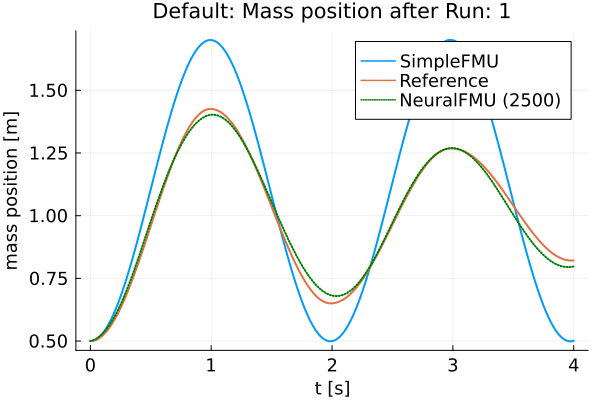
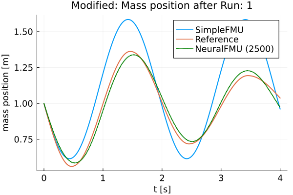
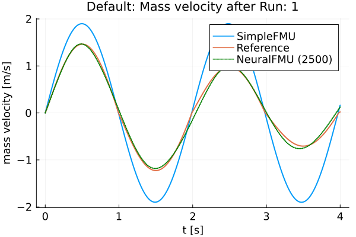
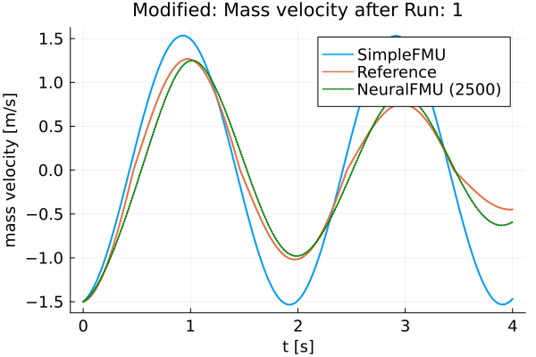
[36m[1m[ [22m[39m[36m[1mInfo: [22m[39mFriction model 1 mse: 16.232580101547452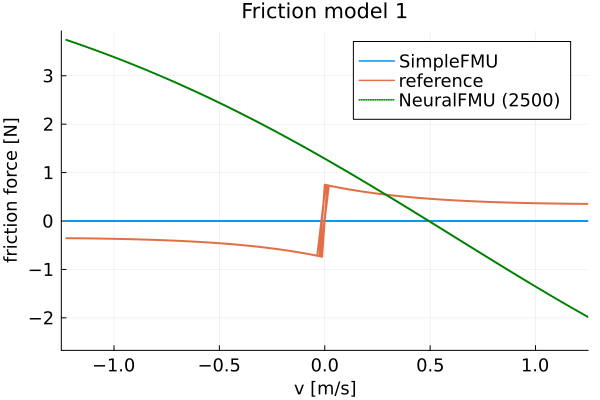
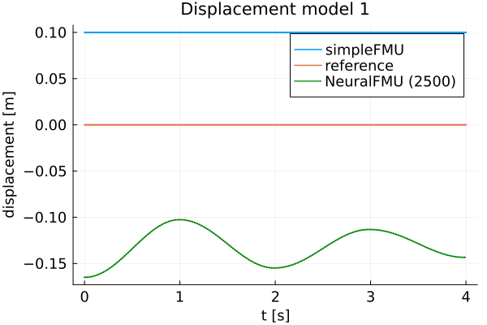
[36m[1m[ [22m[39m[36m[1mInfo: [22m[39mRun: 2/2 Epoch: 1/5
[36m[1m┌ [22m[39m[36m[1mInfo: [22m[39m Loss [2551]: 0.00299
[36m[1m│ [22m[39m Avg displacement in data: 0.05471
[36m[1m└ [22m[39m Weight/Scale: 0.7419365662138708 Bias/Offset: 0.1878468287765319
[36m[1m┌ [22m[39m[36m[1mInfo: [22m[39m Loss [2601]: 0.00284
[36m[1m│ [22m[39m Avg displacement in data: 0.05331
[36m[1m└ [22m[39m Weight/Scale: 0.7424744354177043 Bias/Offset: 0.18893082579537104
[36m[1m┌ [22m[39m[36m[1mInfo: [22m[39m Loss [2651]: 0.0027
[36m[1m│ [22m[39m Avg displacement in data: 0.05194
[36m[1m└ [22m[39m Weight/Scale: 0.742949648496252 Bias/Offset: 0.18999692447321198
[36m[1m┌ [22m[39m[36m[1mInfo: [22m[39m Loss [2701]: 0.00252
[36m[1m│ [22m[39m Avg displacement in data: 0.05023
[36m[1m└ [22m[39m Weight/Scale: 0.7433592823157747 Bias/Offset: 0.19101019118947138
[36m[1m┌ [22m[39m[36m[1mInfo: [22m[39m Loss [2751]: 0.00234
[36m[1m│ [22m[39m Avg displacement in data: 0.0484
[36m[1m└ [22m[39m Weight/Scale: 0.7436864799846147 Bias/Offset: 0.1919218014162369
[36m[1m┌ [22m[39m[36m[1mInfo: [22m[39m Loss [2801]: 0.0023
[36m[1m│ [22m[39m Avg displacement in data: 0.04795
[36m[1m└ [22m[39m Weight/Scale: 0.7439909330817485 Bias/Offset: 0.19280167535519802
[36m[1m┌ [22m[39m[36m[1mInfo: [22m[39m Loss [2851]: 0.00213
[36m[1m│ [22m[39m Avg displacement in data: 0.04614
[36m[1m└ [22m[39m Weight/Scale: 0.7443055972486099 Bias/Offset: 0.19369888596061352
[36m[1m┌ [22m[39m[36m[1mInfo: [22m[39m Loss [2901]: 0.00205
[36m[1m│ [22m[39m Avg displacement in data: 0.04529
[36m[1m└ [22m[39m Weight/Scale: 0.7446299508775963 Bias/Offset: 0.19462112964878003
[36m[1m┌ [22m[39m[36m[1mInfo: [22m[39m Loss [2951]: 0.00195
[36m[1m│ [22m[39m Avg displacement in data: 0.04421
[36m[1m└ [22m[39m Weight/Scale: 0.7449311687977194 Bias/Offset: 0.19552385462521474
[36m[1m┌ [22m[39m[36m[1mInfo: [22m[39m Loss [3001]: 0.00185
[36m[1m│ [22m[39m Avg displacement in data: 0.04302
[36m[1m└ [22m[39m Weight/Scale: 0.74520232794863 Bias/Offset: 0.1963851042561278
[36m[1m[ [22m[39m[36m[1mInfo: [22m[39mRun: 2/2 Epoch: 2/5
[36m[1m┌ [22m[39m[36m[1mInfo: [22m[39m Loss [3051]: 0.00177
[36m[1m│ [22m[39m Avg displacement in data: 0.04207
[36m[1m└ [22m[39m Weight/Scale: 0.745448440230797 Bias/Offset: 0.19720191202649107
[36m[1m┌ [22m[39m[36m[1mInfo: [22m[39m Loss [3101]: 0.00165
[36m[1m│ [22m[39m Avg displacement in data: 0.04059
[36m[1m└ [22m[39m Weight/Scale: 0.7456688947008796 Bias/Offset: 0.1979708758881636
[36m[1m┌ [22m[39m[36m[1mInfo: [22m[39m Loss [3151]: 0.00155
[36m[1m│ [22m[39m Avg displacement in data: 0.03943
[36m[1m└ [22m[39m Weight/Scale: 0.7458699345411773 Bias/Offset: 0.1986996956761452
[36m[1m┌ [22m[39m[36m[1mInfo: [22m[39m Loss [3201]: 0.00145
[36m[1m│ [22m[39m Avg displacement in data: 0.03804
[36m[1m└ [22m[39m Weight/Scale: 0.7460507018013234 Bias/Offset: 0.1993856311648856
[36m[1m┌ [22m[39m[36m[1mInfo: [22m[39m Loss [3251]: 0.00137
[36m[1m│ [22m[39m Avg displacement in data: 0.03701
[36m[1m└ [22m[39m Weight/Scale: 0.7462168450809621 Bias/Offset: 0.20003395983027222
[36m[1m┌ [22m[39m[36m[1mInfo: [22m[39m Loss [3301]: 0.00122
[36m[1m│ [22m[39m Avg displacement in data: 0.03496
[36m[1m└ [22m[39m Weight/Scale: 0.7463737985498154 Bias/Offset: 0.20065377352758598
[36m[1m┌ [22m[39m[36m[1mInfo: [22m[39m Loss [3351]: 0.0012
[36m[1m│ [22m[39m Avg displacement in data: 0.03469
[36m[1m└ [22m[39m Weight/Scale: 0.7464919697533906 Bias/Offset: 0.20120449344603938
[36m[1m┌ [22m[39m[36m[1mInfo: [22m[39m Loss [3401]: 0.00112
[36m[1m│ [22m[39m Avg displacement in data: 0.0334
[36m[1m└ [22m[39m Weight/Scale: 0.7465629347198826 Bias/Offset: 0.20167520033160963
[36m[1m┌ [22m[39m[36m[1mInfo: [22m[39m Loss [3451]: 0.00104
[36m[1m│ [22m[39m Avg displacement in data: 0.0323
[36m[1m└ [22m[39m Weight/Scale: 0.7465725091556634 Bias/Offset: 0.2020557832207194
[36m[1m┌ [22m[39m[36m[1mInfo: [22m[39m Loss [3501]: 0.00099
[36m[1m│ [22m[39m Avg displacement in data: 0.03154
[36m[1m└ [22m[39m Weight/Scale: 0.7465472861620893 Bias/Offset: 0.20241153374206378
[36m[1m[ [22m[39m[36m[1mInfo: [22m[39mRun: 2/2 Epoch: 3/5
[36m[1m┌ [22m[39m[36m[1mInfo: [22m[39m Loss [3551]: 0.00095
[36m[1m│ [22m[39m Avg displacement in data: 0.03087
[36m[1m└ [22m[39m Weight/Scale: 0.7465245689503418 Bias/Offset: 0.20278115660826834
[36m[1m┌ [22m[39m[36m[1mInfo: [22m[39m Loss [3601]: 0.00086
[36m[1m│ [22m[39m Avg displacement in data: 0.02936
[36m[1m└ [22m[39m Weight/Scale: 0.7465291204318416 Bias/Offset: 0.20321637665028092
[36m[1m┌ [22m[39m[36m[1mInfo: [22m[39m Loss [3651]: 0.0008
[36m[1m│ [22m[39m Avg displacement in data: 0.02836
[36m[1m└ [22m[39m Weight/Scale: 0.7465288732450426 Bias/Offset: 0.20369969703507285
[36m[1m┌ [22m[39m[36m[1mInfo: [22m[39m Loss [3701]: 0.00077
[36m[1m│ [22m[39m Avg displacement in data: 0.02783
[36m[1m└ [22m[39m Weight/Scale: 0.7463219745903018 Bias/Offset: 0.2039177990861705
[36m[1m┌ [22m[39m[36m[1mInfo: [22m[39m Loss [3751]: 0.00077
[36m[1m│ [22m[39m Avg displacement in data: 0.02766
[36m[1m└ [22m[39m Weight/Scale: 0.74608098691679 Bias/Offset: 0.2040596661062396
[36m[1m┌ [22m[39m[36m[1mInfo: [22m[39m Loss [3801]: 0.00072
[36m[1m│ [22m[39m Avg displacement in data: 0.02691
[36m[1m└ [22m[39m Weight/Scale: 0.7458491872621077 Bias/Offset: 0.20417390580674993
[36m[1m┌ [22m[39m[36m[1mInfo: [22m[39m Loss [3851]: 0.0007
[36m[1m│ [22m[39m Avg displacement in data: 0.02641
[36m[1m└ [22m[39m Weight/Scale: 0.7456183210027667 Bias/Offset: 0.20427121103796264
[36m[1m┌ [22m[39m[36m[1mInfo: [22m[39m Loss [3901]: 0.00067
[36m[1m│ [22m[39m Avg displacement in data: 0.02592
[36m[1m└ [22m[39m Weight/Scale: 0.7453405806794543 Bias/Offset: 0.20431485975844926
[36m[1m┌ [22m[39m[36m[1mInfo: [22m[39m Loss [3951]: 0.00065
[36m[1m│ [22m[39m Avg displacement in data: 0.02544
[36m[1m└ [22m[39m Weight/Scale: 0.7450862479151532 Bias/Offset: 0.20439118820381963
[36m[1m┌ [22m[39m[36m[1mInfo: [22m[39m Loss [4001]: 0.00062
[36m[1m│ [22m[39m Avg displacement in data: 0.02492
[36m[1m└ [22m[39m Weight/Scale: 0.7448369796836511 Bias/Offset: 0.2044734048178807
[36m[1m[ [22m[39m[36m[1mInfo: [22m[39mRun: 2/2 Epoch: 4/5
[36m[1m┌ [22m[39m[36m[1mInfo: [22m[39m Loss [4051]: 0.00056
[36m[1m│ [22m[39m Avg displacement in data: 0.02368
[36m[1m└ [22m[39m Weight/Scale: 0.7445309004616978 Bias/Offset: 0.20449511753865166
[36m[1m┌ [22m[39m[36m[1mInfo: [22m[39m Loss [4101]: 0.00053
[36m[1m│ [22m[39m Avg displacement in data: 0.02312
[36m[1m└ [22m[39m Weight/Scale: 0.7442248267151766 Bias/Offset: 0.2045344009891565
[36m[1m┌ [22m[39m[36m[1mInfo: [22m[39m Loss [4151]: 0.00052
[36m[1m│ [22m[39m Avg displacement in data: 0.0227
[36m[1m└ [22m[39m Weight/Scale: 0.7439291793931154 Bias/Offset: 0.2045821540614581
[36m[1m┌ [22m[39m[36m[1mInfo: [22m[39m Loss [4201]: 0.00056
[36m[1m│ [22m[39m Avg displacement in data: 0.02363
[36m[1m└ [22m[39m Weight/Scale: 0.7435904407562999 Bias/Offset: 0.20459048824930828
[36m[1m┌ [22m[39m[36m[1mInfo: [22m[39m Loss [4251]: 0.00052
[36m[1m│ [22m[39m Avg displacement in data: 0.02288
[36m[1m└ [22m[39m Weight/Scale: 0.7432294296289985 Bias/Offset: 0.20457814101602645
[36m[1m┌ [22m[39m[36m[1mInfo: [22m[39m Loss [4301]: 0.00051
[36m[1m│ [22m[39m Avg displacement in data: 0.02255
[36m[1m└ [22m[39m Weight/Scale: 0.742901495830774 Bias/Offset: 0.20460272097375498
[36m[1m┌ [22m[39m[36m[1mInfo: [22m[39m Loss [4351]: 0.00051
[36m[1m│ [22m[39m Avg displacement in data: 0.02255
[36m[1m└ [22m[39m Weight/Scale: 0.742531102734291 Bias/Offset: 0.20458757802775068
[36m[1m┌ [22m[39m[36m[1mInfo: [22m[39m Loss [4401]: 0.00048
[36m[1m│ [22m[39m Avg displacement in data: 0.02199
[36m[1m└ [22m[39m Weight/Scale: 0.7421432271698286 Bias/Offset: 0.20455743937621657
[36m[1m┌ [22m[39m[36m[1mInfo: [22m[39m Loss [4451]: 0.00047
[36m[1m│ [22m[39m Avg displacement in data: 0.02172
[36m[1m└ [22m[39m Weight/Scale: 0.7418061983963785 Bias/Offset: 0.20458140315870818
[36m[1m┌ [22m[39m[36m[1mInfo: [22m[39m Loss [4501]: 0.00049
[36m[1m│ [22m[39m Avg displacement in data: 0.02215
[36m[1m└ [22m[39m Weight/Scale: 0.7414569310399177 Bias/Offset: 0.2045870285661631
[36m[1m[ [22m[39m[36m[1mInfo: [22m[39mRun: 2/2 Epoch: 5/5
[36m[1m┌ [22m[39m[36m[1mInfo: [22m[39m Loss [4551]: 0.00045
[36m[1m│ [22m[39m Avg displacement in data: 0.02124
[36m[1m└ [22m[39m Weight/Scale: 0.7410502940306638 Bias/Offset: 0.20455026395637046
[36m[1m┌ [22m[39m[36m[1mInfo: [22m[39m Loss [4601]: 0.00045
[36m[1m│ [22m[39m Avg displacement in data: 0.02119
[36m[1m└ [22m[39m Weight/Scale: 0.7407264930528901 Bias/Offset: 0.20459806989867355
[36m[1m┌ [22m[39m[36m[1mInfo: [22m[39m Loss [4651]: 0.00048
[36m[1m│ [22m[39m Avg displacement in data: 0.02197
[36m[1m└ [22m[39m Weight/Scale: 0.740432105903971 Bias/Offset: 0.20468049583115752
[36m[1m┌ [22m[39m[36m[1mInfo: [22m[39m Loss [4701]: 0.00044
[36m[1m│ [22m[39m Avg displacement in data: 0.021
[36m[1m└ [22m[39m Weight/Scale: 0.740133078439186 Bias/Offset: 0.2047794041359737
[36m[1m┌ [22m[39m[36m[1mInfo: [22m[39m Loss [4751]: 0.00044
[36m[1m│ [22m[39m Avg displacement in data: 0.02097
[36m[1m└ [22m[39m Weight/Scale: 0.7399097064430682 Bias/Offset: 0.20497024877279083
[36m[1m┌ [22m[39m[36m[1mInfo: [22m[39m Loss [4801]: 0.00044
[36m[1m│ [22m[39m Avg displacement in data: 0.02106
[36m[1m└ [22m[39m Weight/Scale: 0.7396632204590547 Bias/Offset: 0.2051573735120535
[36m[1m┌ [22m[39m[36m[1mInfo: [22m[39m Loss [4851]: 0.00044
[36m[1m│ [22m[39m Avg displacement in data: 0.02097
[36m[1m└ [22m[39m Weight/Scale: 0.7394794467198463 Bias/Offset: 0.20542948817105694
[36m[1m┌ [22m[39m[36m[1mInfo: [22m[39m Loss [4901]: 0.00081
[36m[1m│ [22m[39m Avg displacement in data: 0.02852
[36m[1m└ [22m[39m Weight/Scale: 0.739380863128945 Bias/Offset: 0.20582876217747154
[36m[1m┌ [22m[39m[36m[1mInfo: [22m[39m Loss [4951]: 0.00043
[36m[1m│ [22m[39m Avg displacement in data: 0.0208
[36m[1m└ [22m[39m Weight/Scale: 0.7391835308684642 Bias/Offset: 0.2061171423032654
[36m[1m┌ [22m[39m[36m[1mInfo: [22m[39m Loss [5001]: 0.00046
[36m[1m│ [22m[39m Avg displacement in data: 0.02135
[36m[1m└ [22m[39m Weight/Scale: 0.7391550126483246 Bias/Offset: 0.20665146096024078
100.303015 seconds (1.19 G allocations: 52.767 GiB, 7.38% gc time)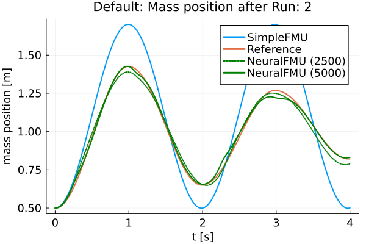

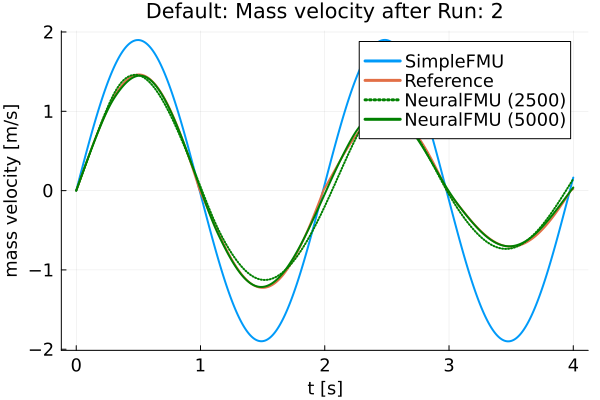
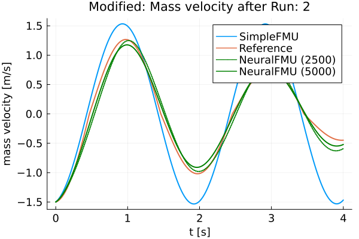
[36m[1m[ [22m[39m[36m[1mInfo: [22m[39mFriction model 1 mse: 16.232580101547452
[36m[1m[ [22m[39m[36m[1mInfo: [22m[39mFriction model 2 mse: 18.506779003160688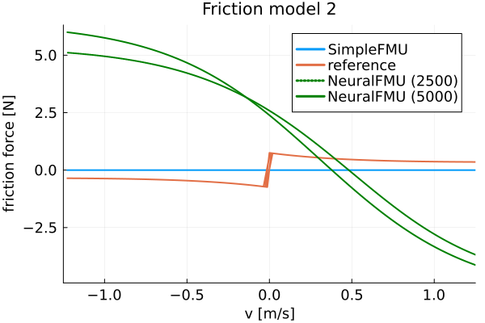
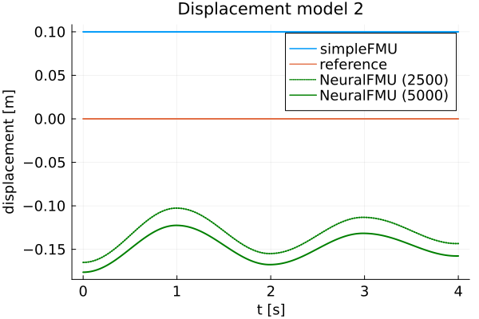
Finally, the FMU is cleaned-up.
fmiUnload(simpleFMU)Summary
Based on the plots, it can be seen that the curves of the realFMU and the neuralFMU are very close. The neuralFMU is able to learn the friction and displacement model.
Source
[1] Tobias Thummerer, Lars Mikelsons and Josef Kircher. 2021. NeuralFMU: towards structural integration of FMUs into neural networks. Martin Sjölund, Lena Buffoni, Adrian Pop and Lennart Ochel (Ed.). Proceedings of 14th Modelica Conference 2021, Linköping, Sweden, September 20-24, 2021. Linköping University Electronic Press, Linköping (Linköping Electronic Conference Proceedings ; 181), 297-306. DOI: 10.3384/ecp21181297